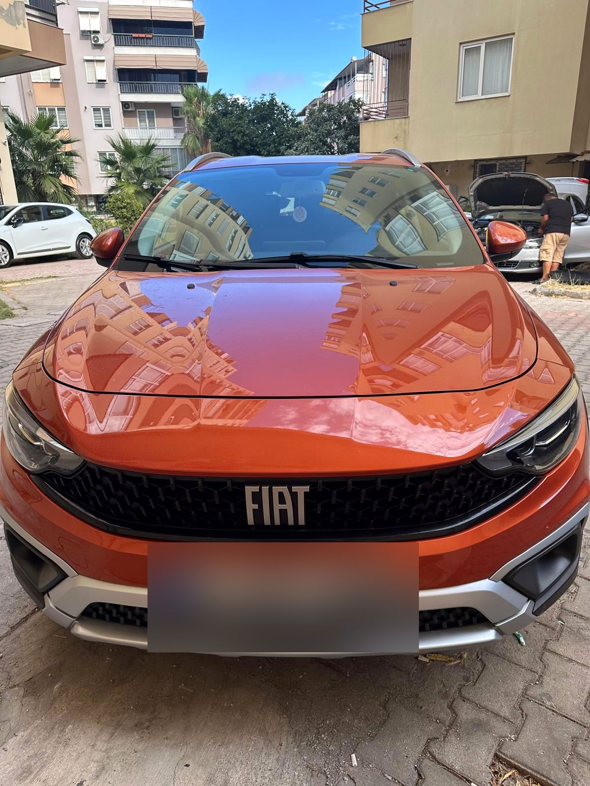
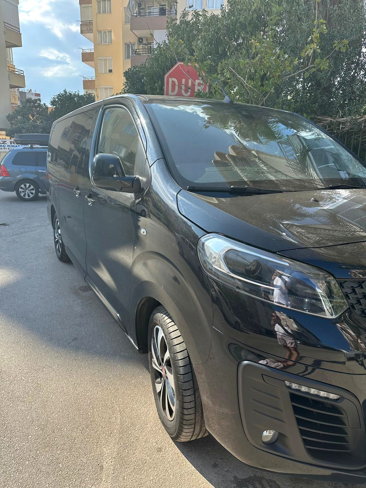

Muratpaşa / Antalya
Bavulu bırakın, anahtarı alın
Pzt–Cmt 08:30–23:30 · Paz 12:00–18:30



01
Filo
02
Online rezervasyon

03
Havalimanı karşılama

04
Dijital teslim kontrolü
05
Müşterilerimiz ne diyor
4,9★★★★★ · 448 Google yorumuGoogle
06
Depozito ve kiralama şartları
07